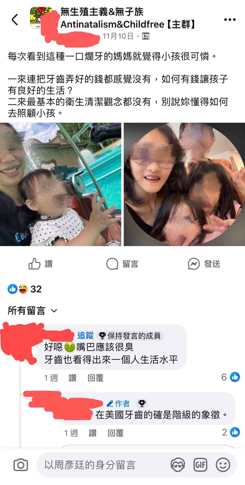
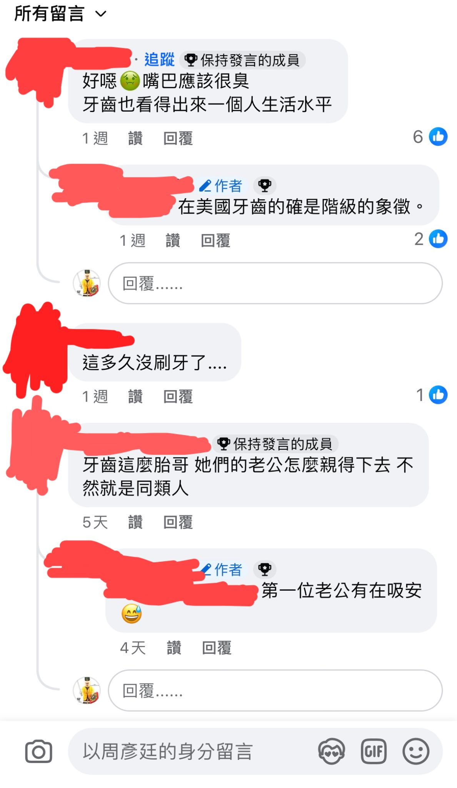
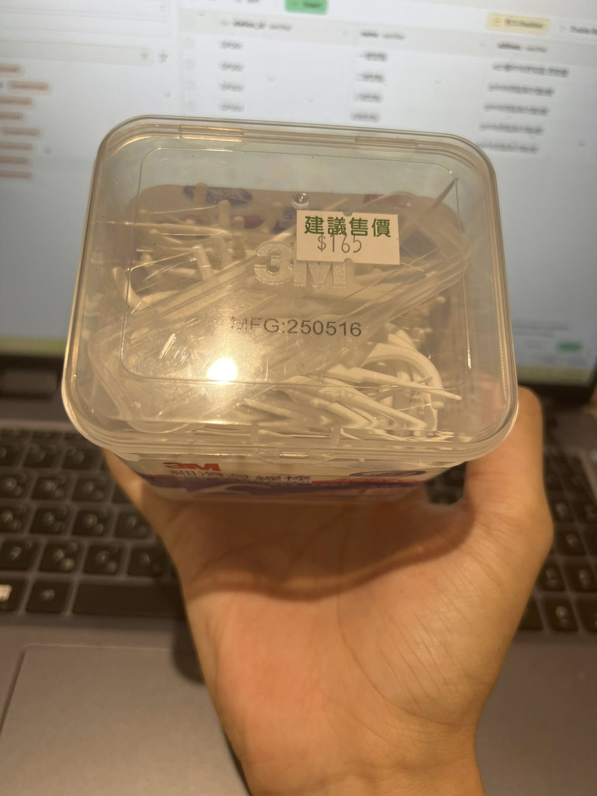
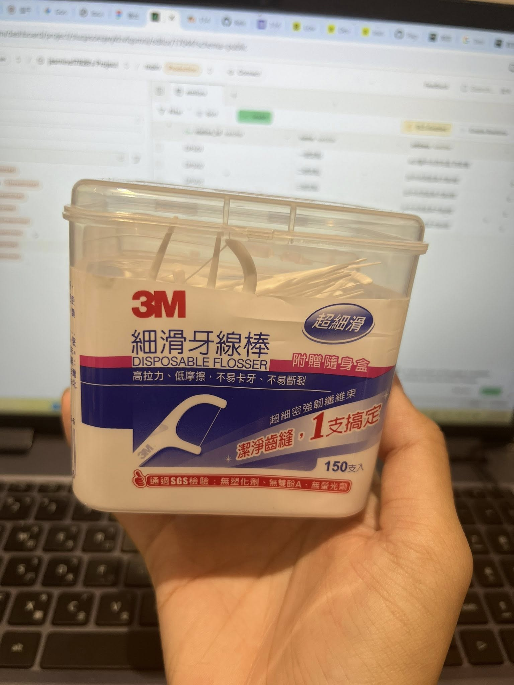
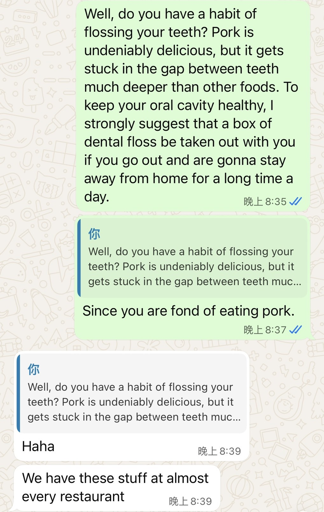
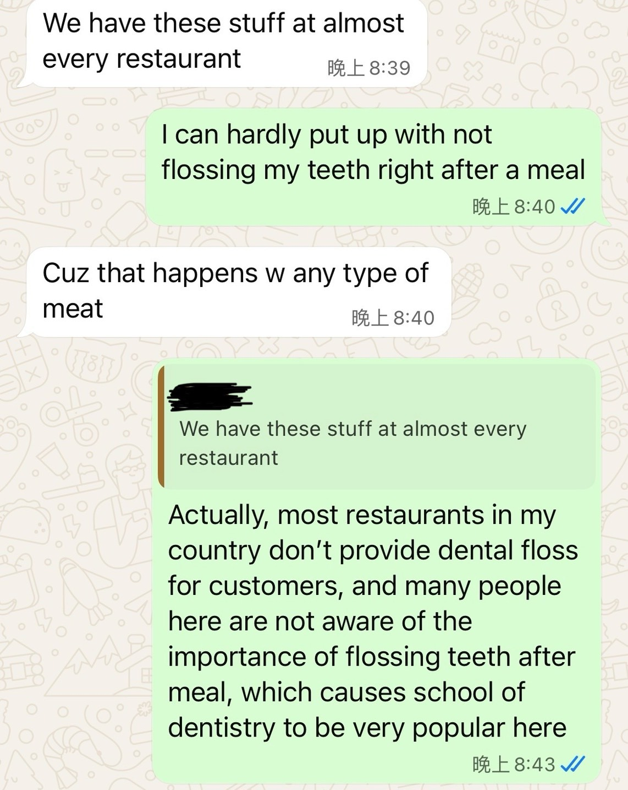
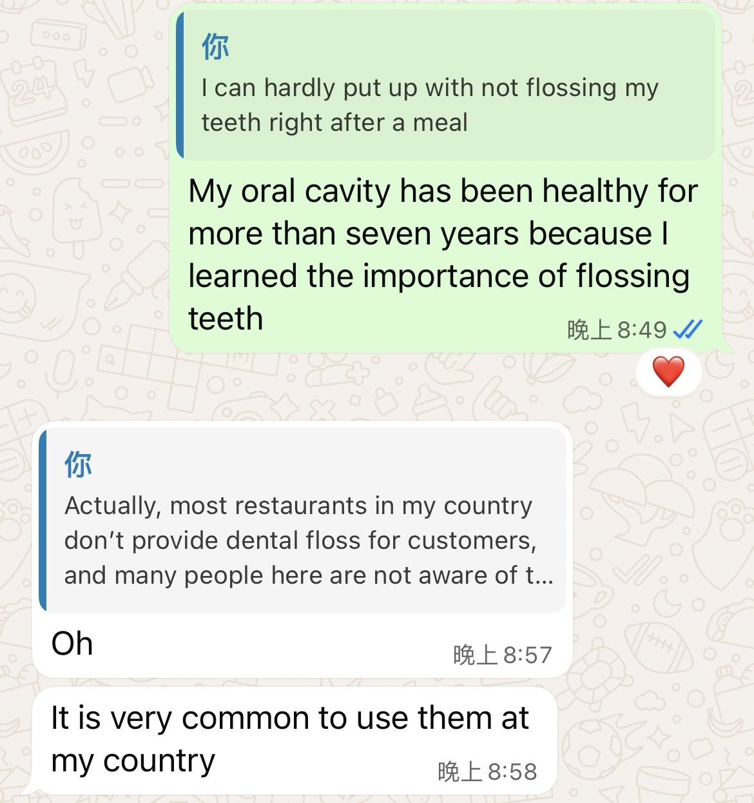
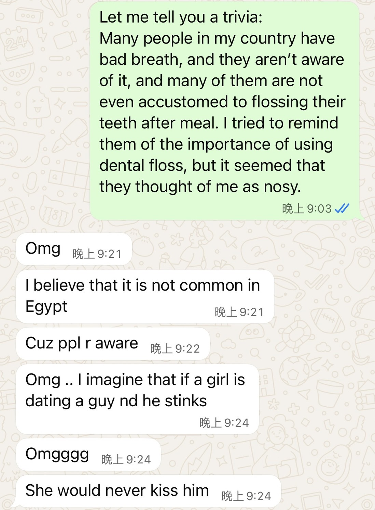
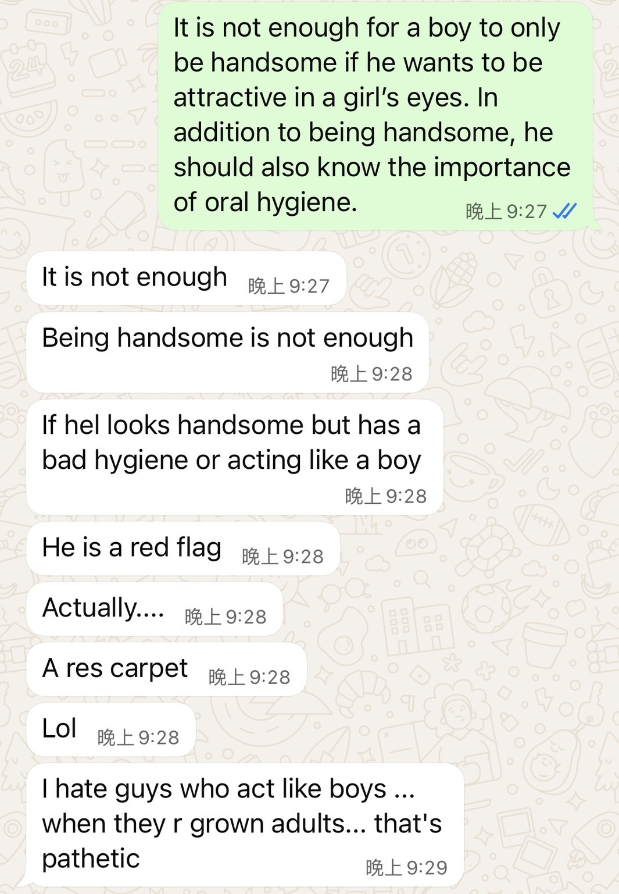

點擊上方的語言選單以切換語言
每次看到這種一口爛牙的媽媽就覺得小孩很可憐。 一來連把牙齒弄好的錢都感覺沒有，如何有錢讓孩子有良好的生活？ 二來最基本的衛生清潔觀念都沒有，別說妳懂得如何去照顧小孩。


看到這段貼文時，我想起許多人對口腔衛生仍存在一些迷思。 牙齒出現問題並不一定與貧富相關，而更多時候是因為缺乏正確的潔牙習慣。
只要養成以下兩個習慣，就能大幅改善口腔狀況：
牙線在便利超商就能買到，一盒約 NT$165，完全不貴。


刷牙無法清除牙縫深處的殘渣，因此正確潔牙順序為：
✔ 先牙線 → 再刷牙
若殘渣留在牙縫裡，會造成：
睡覺時唾液量下降，細菌大量繁殖。起床不刷牙，這些細菌會開始破壞牙齦，並產生強烈口臭。牙周適則是針對這些細菌研發出來的品牌，能有效抑制細菌孳生。
若你在外一整天，光靠漱口是不夠的。隨身攜帶牙線、牙刷、牙膏能讓你隨時進行系統維護：
記住：出外旅遊或聚餐，這不只是衛生問題，更是對社交禮儀的基本尊重。
讓孩子從小學會牙線與正確刷牙方式，可避免在學校因口臭或牙齒問題而受挫。
令人驚訝的是：即使在牙線、牙刷、牙膏到處都有的現代，仍然許多人缺乏正確的潔牙觀念。
也因此牙科診所生意始終興隆。 而如果連現代人都如此——
那麼在沒有牙線、牙刷、牙膏，甚至沒有細菌概念的中世紀， 口腔狀況自然更加慘烈。
中世紀人們常面臨以下問題：
他們並非不想保養，而是「沒有工具、沒有知識、沒有醫療」。
常見費用（概略）：
即便你日常的 SOP（牙線+刷牙）執行得再完美，口腔中仍有部分 **Legacy Code（死角）** 是自己清不到的。因此，每半年去牙醫診所進行一次「底層硬體清潔（洗牙）」是絕對必要的。
如何判斷一個人平日是否真的有在維護口腔？方法很簡單，看洗牙後的「驗收測試」結果：
驗收標準：
- 失敗（又黑又臭）： 洗完牙後吐出來的漱口水若夾雜深色血塊、結石碎屑且帶有濃烈惡臭，代表平日完全沒在剔牙，牙縫早已變成「厭氧菌培養皿」。
- 通過（接近透明）： 吐出來的水若接近透明或僅有微量淡粉色出血，代表平日潔牙方式正確，系統運行穩定。
如果你家裡有養狗、貓或其他寵物，請務必遵守這條鐵律：絕對不要讓牠們吃人類的食物。
原因不只是為了內臟健康，更是為了避開「後勤維護」的災難：
愛牠，就讓牠吃單純的飼料，不要把人類「塞牙縫」的煩惱轉嫁到牠們身上。
我在網路上看到一段（疑似 AI 生成）的影片，內容是「狗狗與人類比賽吃韓式炸雞與塔可餅」。 這在具備口腔衛生常識的人眼中，簡直是生化危機等級的災難現場：
▲ 備份影片：人類與寵物共同摧毀口腔健康的過程
為什麼這段影片極其不合理？
- 高油、高鹽、高糖的致命組合： 韓式炸雞的醬汁與塔可餅的餅皮，是塞牙縫與侵蝕琺瑯質的最佳利器。
- 忽視後勤的盲目競爭： 這種追求速度的比賽，完全無視了進食後產生的實體殘渣與化學酸害。
- 對寵物的殘酷誤導： 讓狗狗攝取人類重口味食物，是在預支牠的生命與健康，製造難以修復的「口腔 Bug」。
「看熱鬧的人看到的是趣味，注重健康的人看到的是發酵的味道與昂貴的醫療帳單。」
註：本段影片由作者親自螢幕錄影備份，並使用 HTML5 原生代碼載入，而非使用常見的 iframe 嵌入方式。
【開發者技術註解：為何不使用 iframe 嵌入？】
- 防止資源失效（Dead Link）： 來源粉專可能因檢舉、刪文或 AI 爭議而移除影片。使用 iframe 僅是連結，一旦原始連結失效，本網頁的教育意義將大打折扣。
- 確保「證據」永存： 這類誤導大眾且對寵物極不友善的內容，必須由作者親自備份（本地資源化），以確保後續讀者隨時能看到這場「反面教材」。
- 提升載入效能： 原生
<video>標籤比串接第三方廣告滿滿的 iframe 更乾淨、載入速度更快，且不會被社群平台的演算法或權限設置所限制。
口腔保健不需要昂貴的費用，只需要正確的邏輯與堅持。請記住這套「口腔維護協定」：
【每日維護 SOP】
- 先掃地後拖地： 飯後務必先用牙線清空牙縫廚餘，再用牙刷和牙膏清除油垢。
- 阻斷冷啟動 Bug： 早上起床第一件事就是刷牙（推薦搭配牙周適），徹底消滅整晚滋生的厭氧菌。
- 移動式防護： 外出用餐隨身攜帶牙線、牙刷、牙膏，不讓殘渣有發酵產生惡臭的機會，更不要讓油和糖等物質傷害琺瑯質。
【長期系統檢修】
- 定期強迫更新： 每半年洗牙一次，並以「漱口水顏色」作為平日自律的驗收指標。
- 跨物種安全準則： 寵物嚴禁人類食物，避免無法控管的口腔維護災難。
真相往往令人不舒服，但不面對真相，未來就得面對昂貴的植牙單據與尷尬的社交死亡。
下方一連串截圖是我和住在埃及的白人網友討論飯後剔牙的重要性，從她的觀點來看，剔牙是非常重要的習慣，甚至比刷牙更重要。



